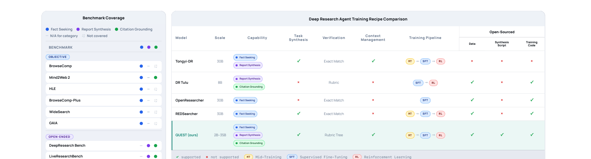
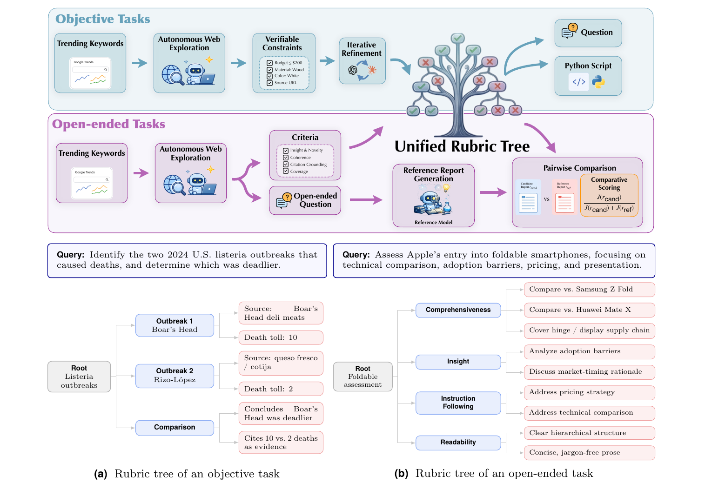
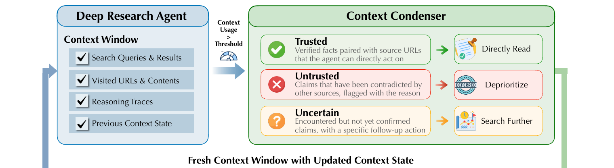
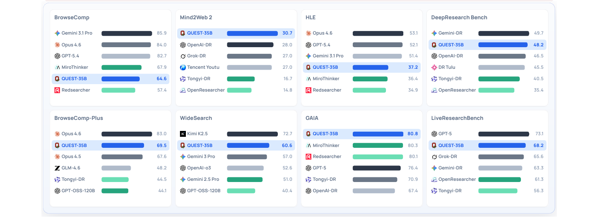
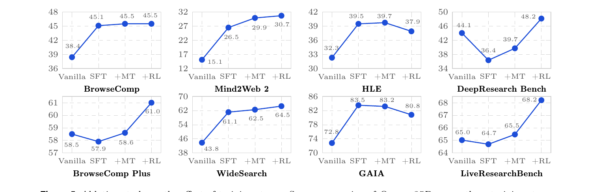
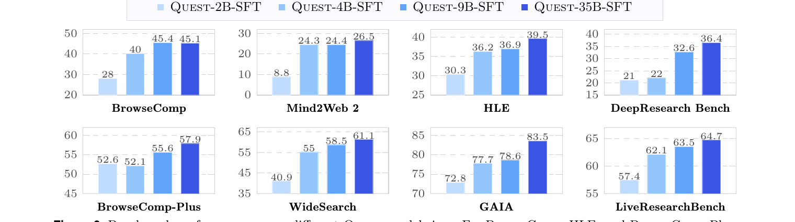

Deep Research Agent · Fully Synthetic Training
Training Frontier Deep Research Agents with Fully Synthetic Tasks
The Ohio State University（OSU NLP）· Amazon AGI SF Lab
深度研究智能体要在长程任务里自己搜索、阅读、核实、综合信息。卡点不在模型，而在训练数据：现有开源做法大多只用「一题配一个标准答案」的数据，只能教会找事实、奖励还是 0/1 的粗信号。Quest 的核心是把所有任务统一表示成 rubric tree（评分树）——一棵把"好答案该满足的约束"层层拆开的树。它能同时覆盖唯一答案、多解、开放式三类任务，可全自动合成、可自动验证打分，还能给出比 0/1 更细的部分分作为强化学习奖励。再配合结构化上下文管理与中训练 → SFT → RL 三阶段流程，仅用 8K 条合成任务，Quest-35B 就在 8 个 benchmark 上追平甚至超过闭源的 OpenAI DeepResearch。
问题定义
网络检索正在从「人工翻页找信息」走向「智能体自主取证 + 综合」。传统搜索引擎返回排序网页让人自己看，RAG 系统检索文档再让大模型作答，而深度研究智能体更进一步：给一个复杂的信息需求，它会自己把任务拆成子目标、执行多轮搜索、阅读外部网页，最后产出有引用支撑的回答。
难点在于：它不只要会"答题"，还要在长程交互中学会搜索、核实、记忆与综合。但前沿系统几乎都是闭源的——模型、数据、训练流程都不透明；而现有开源智能体往往只擅长某一类任务，泛化很差。作者指出，深度研究任务按"答案如何评判"分成两大类：
由此作者提炼出通用深度研究智能体应同时具备的三大能力——而现有 benchmark 与系统都只孤立地支持其中一两项，没有人在统一框架里把三者一起做好：
通过多跳网络搜索定位一个具体、难找的事实。代表基准 BrowseComp，专门考冷僻、相互纠缠的事实。
每条论断都要有可靠、最新、可核验的来源 URL 支撑。代表基准 Mind2Web 2，靠显式约束 + 引用回溯来评分。
把多来源信息综合成连贯、结构化、可读的长报告。代表基准 DeepResearch Bench，按 rubric 评判覆盖/组织/清晰度。
已有方案卡在哪
近期一批开源工作（Tongyi-DR、DR Tulu、OpenResearcher、RedSearcher 等）开始公开权重与训练策略，但大多只覆盖部分能力。下图把它们与 Quest 沿多个维度对照：覆盖了哪些能力、用什么验证方式（精确匹配 vs 评分树）、有没有上下文管理、训练流程是否完整、是否真正全开源。

Exact Match（单答案精确匹配）或部分 Rubric；只有 Quest 用统一的 Rubric Tree 评分树，能给细粒度部分分。MT → SFT → RL 三段；其它系统多缺少中训练或 RL。作者用三个有代表性的开源基线说明"数据配方决定能力边界"这一论点：
做法：提出一套完整训练框架，把中训练、监督微调、强化学习组合起来训练开源大模型作为智能体。数据合成以"复杂问题 + 单一可验证答案"为主（BrowseComp 式）。
卡点：单答案监督主要锻炼 fact seeking，奖励是二元正确/错误，难以迁移到需要多来源聚合与综合的开放式任务。论文实测它在 BrowseComp、HLE、GAIA 这些重事实查找的基准上确实最强，但在 Mind2Web 2、DeepResearch Bench 上落后于 Quest。
做法：通过自动数据生成策略（蒸馏、图结构任务合成等）扩展智能体训练数据规模。
卡点：其合成配方与 BrowseComp-Plus（一个完全离线的基准）高度吻合，因此在该基准上表现最好；但换到其它分布上明显掉队——再次印证"能力被数据配方塑形"。
做法：通过强化学习探索智能体训练，偏向报告综合方向。
卡点：作者亲自在 Mind2Web 2 上评测发现它擅长以报告综合为主的开放式任务，但在客观任务上几乎不可用（M2W2 仅 1.6%），于是没有继续在其它客观基准上评测——典型的"偏科"。
核心抽象
Quest 的方法基石源自 Mind2Web 2 的 rubric tree——把"一个合格答案应满足的约束"做层级化拆解。但 Mind2Web 2 依赖人工写任务、人工修评分脚本；Quest 则全自动生成评分树（再加严格的精炼与验证），才让大规模数据合成成为可能。一棵评分树的结构是：
这个设计一举解决了"单答案监督"的两个毛病：① 它表示的是约束而非唯一答案，于是能同时容纳唯一答案、多解、开放式多维评价三类任务，用一套框架生成多样数据；② 根节点的部分分提供了比 0/1 细得多的训练信号，反映"答案满足了多少约束"。
同一组叶子检查，聚合方式不同，奖励信号就不同。点叶子切换"通过/失败"，再切换聚合模式，看根节点得分如何变化。
本文方法 · 重头戏（一）
整条流水线以评分树为中心，同时产出客观与开放式训练数据。每条数据 = 一个复杂 query + 一棵专属评分树 + 一套评估协议。给定智能体的回答，评估协议依据评分树把回答映射到 \([0,1]\) 的分数。全流程里负责生成的强模型记作 \(G_{syn}\)（默认 Claude Sonnet 4.5）。

从 Google Trends 采样趋势关键词，保证话题相关、时效多样、贴近真实需求。
\(G_{syn}\) 自主浏览网页，收集信息并抽出一组可验证约束，组织成评分树。
对树做迭代精炼与验证；无法解析成一致可评估结构的任务直接丢弃。
\(G_{syn}\) 把树翻译成自然语言问题，GPT-5 生成可执行 Python 脚本逐节点验证并算最终分。
开放式任务前半段（采样关键词、网页探索）一样，区别在评分树构造：第二层固定为四个共享维度（指令遵循、全面性、可读性、洞察，沿用 DeepResearch Bench），第三层是 \(G_{syn}\) 按问题自适应生成的任务专属子标准；每个节点的权重由 \(G_{syn}\) 给出（跑三次取平均更稳）。评估协议含三件套：参考报告 + rubric 判分模型 + 成对归一化规则。判分模型同时看候选报告与参考报告（一起看比独立打分能分得更细），对每个叶子给 0–10 分，沿树加权聚合得到 \(J(r_{cand})\) 与 \(J(r_{ref})\)，最终：
为保证任务与评分树可靠，作者用了很激进的过滤策略——留存率很低，但换来的是干净、可自动评估的数据。客观任务的过滤漏斗：
作者还抽 50 个任务请 4 名 CS 研究生人工核验：仅 2 个脚本不可执行、6 个含评分错误——大多数自动生成的脚本能正确解读任务、忠实实现规则。
本文方法 · 重头戏（二）
深度研究要多轮搜索、阅读、修正才出最终答案。随着上下文塞满原始搜索结果、访问过的网页、中间推理，智能体"抓重点"的能力会退化。现有开源智能体的应对要么限制轮数，要么靠超大窗口硬装。Quest 则用一个结构化模块，把全部历史压成紧凑摘要，让智能体能在任意长的时间跨度上推理而不溢出。
具体地，Quest 用一个叫 Context State 的结构化 JSON 存历史，把累积知识分进三个桶——这相当于编码了智能体的认知状态：哪些已知、哪些存疑、哪些还要去查。

最朴素的替代是窗口满了就丢：要么全清（discard-all），要么只留最近 N 轮（keep-last-N）。它们简单，但都把"历史一视同仁地当成可丢"：
更重要的是：作为训练范式它们根本不够用。可靠的训练信号要求智能体在整条轨迹上保持一致连贯的研究状态，尤其在 32K 这种受限预算下，粗暴截断会直接污染监督信号。Context Condenser 把历史压成认知快照而非原始截断：已核实事实显式带走、待办化为具体跟进指令、被反驳的论断打标而非悄悄丢弃——保证跨压缩边界不丢已验证知识。
本文方法 · 重头戏（三）
Quest 训练分三段，各司其职、互补：中训练（MT）让基座适应长程搜索交互、熟悉 Context State 结构；监督微调（SFT）模仿高质量工具使用轨迹；强化学习（RL）用评分树奖励 + 事实核查奖励优化策略。点下面的标签切换看每一段。
两个辅助任务，全部是流水线的"副产品"，不用额外采数据：
轨迹由教师模型 Tongyi DeepResearch（\(G_{traj}\)）在合成任务上跑出来；评估分超过阈值 \(\epsilon\) 才保留（客观 \(\epsilon=1\)、开放式 \(0.475\)）。客观任务失败时用反思式重试：把细粒度评估结果作为提示注入，让它再试。所有报告统一成行内引用格式（每条事实直接标注来源 URL）。
训练时把整条轨迹切成多个会话（session）——一个 session 就是两次上下文压缩之间的连续片段。这样每个训练单元正好对应推理时的"当前工作上下文"。
采用 GRPO 式、基于结果的强化（去掉 KL 惩罚）。奖励由评分树奖励 \(s_{rubric}\) 与事实核查奖励 \(s_{fact}\) 组合：
同一 rollout 派生的多个 session 共享一个去重后的优势值；优势在组内做标准化。
有意思的点
把长轨迹拆成短会话，峰值显存大降——作者因此能在仅 16 张 H100 上训练超过 20 万 token 的轨迹（整轨迹级训练根本放不下）。更妙的是，会话级训练让"单会话长度"与"整轨迹长度"解耦，配合上下文管理，推理时能外推到远超训练时的长度：训练最多 100 轮，推理可泛化到 200+ 轮。
数据合成、SFT 取轨迹、RL rollout 每一步都要成百上千次真实搜索与访问，直连 live API 会贵到不可行。Quest 用双缓存拦在 live API 前面：
训练侧基于 VERL 的全异步框架，作者进一步把评估也做成全异步：评分树评估平均要 ~4 分钟、长尾可达 30 分钟，于是轨迹一生成就丢进 Ray actor 评估池，训练持续从共享队列取已评样本，凑够一批就异步更新——大幅减少长尾 rollout 与长尾评估造成的流水线气泡。
论文专门用一节分享没成功的尝试，对后续工作很有参考价值：
单独使用这个目标能在 BrowseComp 等搜索密集任务上涨点；但加进现有中训练目标混合后，整体一致变差。作者推测它与"上下文摘要"任务功能重叠（两者都要把搜索结果压成结构化状态），产生了冲突的学习信号。
让模型预测给定答案中的潜在问题。但该阶段缺乏外部证据，模型只能识别表面/常识性错误，抓不到更复杂的事实或证据依赖型问题——单靠它作训练信号不够。
用评分树分数构造偏好对、按 DPO 训练偏好更高质量报告。但长文报告往往在覆盖、组织、证据等多维度同时不同，难以得到可靠的成对偏好；小的分数差也未必对应有意义的质量差，训练高方差、收益有限。
逐点打分：每条标准给 0/0.5/1。结果约 50% 的样本分数接近 1，严重虚高、好坏难分——缺乏比较参照时判分模型偏向给高分讨好用户。
胜/平/负成对：用教师模型生成参考报告再三元打分。但早期模型几乎一直输给教师，分数塌向 0，信号对 SFT 过滤和 RL 都不可用。
两种失败模式共同催生了第 2 节最终的"成对归一化"打分设计（Score = J(cand)/(J(cand)+J(ref))）。
实验结论
默认基座是 Qwen3.5-35B-A3B，跑完整配方得到 Quest-35B。在覆盖三类能力的 8 个 benchmark 上：

Quest-35B 在 ~30B 规模开源智能体里几乎全面 SOTA，并在 DeepResearch Bench（48.2 vs OpenAI-DR 47.0）、Mind2Web 2（30.7 vs 28.0）、GAIA（80.8 vs GPT-5 76.4）上追平/反超闭源。
把配方套到 Qwen3-30B-A3B 得 Quest-30B，与 Tongyi-DR、OpenResearcher 同尺寸对比，在 8 个基准的 4 个上最好，尤其重引用接地与报告综合的 M2W2、DRB——印证"配方决定能力覆盖"。

